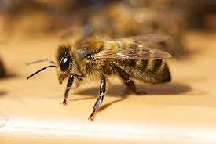
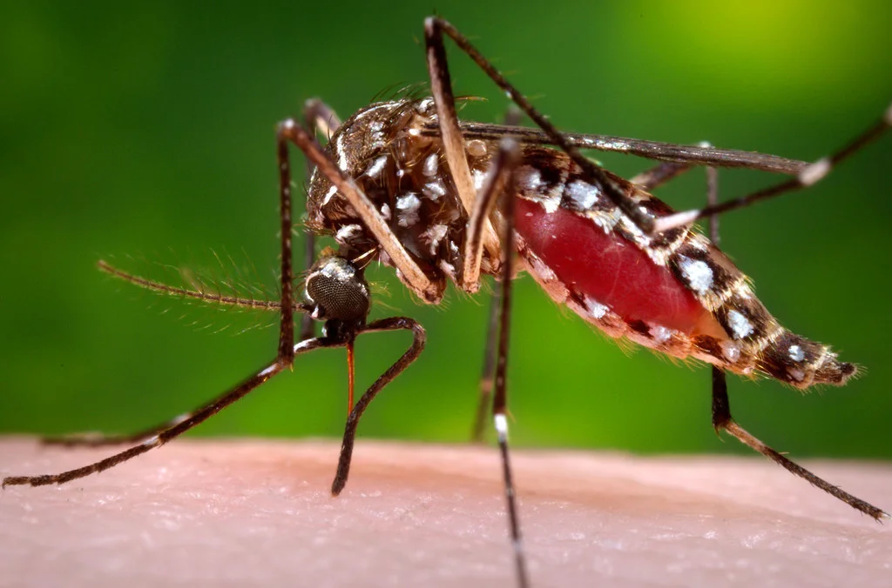

Tendent à se trouver près de surfaces d'eau à mouvement lent.
Société de traitement des piqûres d'insectes à Casablanca Maroc
Être victime d'un insecte piqueur n'a rien d'agréable, ça peut même devenir une vraie plaie pendant les périodes de forte chaleur ou d'humidité. Mais comment s'en protéger ? D'abord, il faut comprendre ce comportement des insectes. S'ils vous piquent, c'est pour se nourrir. Être piqué une fois ne vous empêchera donc pas d'être piqué à nouveau. Et, si leur piqûre en elle-même n'est pas douloureuse, la démangeaison qui en résulte peut être particulièrement désagréable. Notamment lorsque l'on est victime de piqûres multiples !
Ainsi, il faut pouvoir se protéger des moustiques, des puces de lit, mais aussi des guêpes… tout insecte piqueur peut représenter une menace, qu'il le fasse pour se nourrir ou pour se défendre. Mais il n'est pas impossible de se protéger de cette menace ! A condition d'adopter les bons réflexes et d'éviter certains comportements à risque qui peuvent augmenter vos chances de vous faire piquer.

Piqûre d'insecte : est-ce dangereux ?
Cette question revient régulièrement lorsqu'on est victime d'un insecte piqueur. Est-ce que cela peut constituer un réel danger ? La réponse est oui, la piqure de certains insectes peut constituer un vrai danger. Ainsi, dans de nombreuses régions d'humide réputées pour leur humidité, ces insectes peuvent transmettre de graves maladies comme la malaria, le typhus, la fièvre jaune ou encore le virus du Nil occidental. D'où l'importance de se renseigner avant de partir à l'étranger et de faire les vaccins recommandés par votre médecin.
Au Maroc, il est rare qu'un insecte piqueur vous transmette une maladie sérieuse. Néanmoins, leur piqure peut tout de même avoir de vraies
conséquences. La maladie de Lyme, par exemple, qui est une maladie qui peut être à l'origine de symptômes neurologiques, est transmise par la piqure d'une tique. D'où l'importance d'être tout de même assez prudent et d'éviter l'exposition aux insectes piqueurs !
Le risque principal étant une irritation de la peau résultant des piqûres voire une réaction allergique qui peut, elle, avoir de plus lourdes conséquences. Ainsi, en cas de gonflement conséquent à une piqûre, il faut immédiatement prévenir les urgences. C'est pourquoi il est important d'adopter les bons gestes et de limiter les risques d'exposition au maximum. Voici donc quelques conseils pour vous aider à vous protéger !
conséquences. La maladie de Lyme, par exemple, qui est une maladie qui peut être à l'origine de symptômes neurologiques, est transmise par la piqure d'une tique. D'où l'importance d'être tout de même assez prudent et d'éviter l'exposition aux insectes piqueurs !
Le risque principal étant une irritation de la peau résultant des piqûres voire une réaction allergique qui peut, elle, avoir de plus lourdes conséquences. Ainsi, en cas de gonflement conséquent à une piqûre, il faut immédiatement prévenir les urgences. C'est pourquoi il est important d'adopter les bons gestes et de limiter les risques d'exposition au maximum. Voici donc quelques conseils pour vous aider à vous protéger !
Les facteurs d'exposition
Quand on part en vacances en famille, certains sont plus exposés à un insecte piqueur que d'autres. En effet, les guêpes, les moustiques, les puces ont leurs petites préférences. Mieux les comprendre, c'est aussi mieux s'en protéger ! Qu'est-ce qui explique alors que vous soyez toujours touché ? Ce qui intéresse ces insectes, c'est votre sang. C'est donc votre sang qui explique votre sensibilité plus ou moins grande à ce risque de piqûre. Par exemple, si vous êtes du groupe sanguin O, vous serez naturellement plus souvent victimes des piqûres d'insectes.
Plus surprenant, la consommation d'alcool peut augmenter le risque d'exposition. En effet, avoir consommé 350 millilitres de bière augmenterait vos chances de vous faire piquer. Par contre, aucune corrélation entre votre taux de sucre dans le sang et le risque de piqûre n'a été démontrée. En revanche, si vous avez l'impression d'être plus souvent piqué, c'est peut-être surtout parce que votre peau est plus sensible. En effet, certains ne remarquent pas qu'ils ont été piqués.
Enfin, l'humidité, la chaleur favorisent la présence de moustiques et autres insectes susceptibles de vous piquer. Et le moment de la journée à laquelle vous avez le plus de risque d'être piqué, c'est le crépuscule ! Si vous souhaitez éviter d'être victime d'un insecte piqueur, évitez donc de sortir à ce moment de la journée. Il est aussi possible de faire désinsectiser votre maison !
Adopter les bons gestes en cas de piqûre d'insecte
La meilleure protection contre un insecte piqueur reste de connaître les bons gestes pour s'en protéger. La première consigne à suivre étant d'éviter les hautes herbes, surtout si vous êtes en short et t-shirt. Si vous partez en randonnée, préférez les manches longues et les pantalons même légers aux vêtements laissant à découvert certaines parties de votre corps. Mettre du parfum dont les essences sont faites à partir de fleurs augmente aussi considérablement le risque de se faire piquer. Nous vous recommandons donc d'éviter d'en mettre en journée. Attendez plutôt la fin du crépuscule pour vous parfumer.
Si, malgré ces recommandations et vos efforts vous avez été victime d'un
insecte piqueur, le premier réflexe étant de nettoyer la plaie. En cas de débris d'insectes, enlevez-les avec une pince à épiler ou avec vos ongles à condition d'avoir lavé vos mains pour éviter tout risque d'infection. Surtout, éviter de vous gratter, vous ne feriez qu'augmenter le risque d'infection sans soulager durablement vos démangeaisons.
Celles-ci peuvent être soulagées par l'application d'une crème antihistaminique pour piqûre et dards. En cas de piqûres multiples, des antihistaminiques oraux comme les comprimés contre le rhume des foins peuvent vous soulager durablement.

insecte piqueur, le premier réflexe étant de nettoyer la plaie. En cas de débris d'insectes, enlevez-les avec une pince à épiler ou avec vos ongles à condition d'avoir lavé vos mains pour éviter tout risque d'infection. Surtout, éviter de vous gratter, vous ne feriez qu'augmenter le risque d'infection sans soulager durablement vos démangeaisons.
Celles-ci peuvent être soulagées par l'application d'une crème antihistaminique pour piqûre et dards. En cas de piqûres multiples, des antihistaminiques oraux comme les comprimés contre le rhume des foins peuvent vous soulager durablement.
Identification des Insectes Piqueurs
Dans la plupart des cas, l'identification de l'insecte à partir de sa piqûre est très difficile. En effet, les réactions aux piqûres sont si variables qu'elles mènent souvent à un mauvais diagnostic.
En général, il vaut mieux identifier le lieu où la piqûre a eu lieu, chercher d'autres indicateurs pour identifier l'insecte, puis s'assurer que la zone peut être traitée ou évitée, dans le but de prévenir de futures piqûres.
Insectes Piqueurs dans la Maison
Une infestation d'insectes piqueurs dans une maison peut être pénible, mais il n'y a aucune raison de la tolérer, puisque des traitements existent pour s'en débarrasser.
Dans ce pays, les trois principaux types d'insectes piqueurs dans les maisons sont:
Moustiques et autres mouches piqueuses
Piquent en général après le crépuscule, ou durant la nuit.
On les voit souvent au repos sur les plafonds et en haut des murs.
Gardez les fenêtres fermées durant la nuit, ou utilisez des toiles moustiquaires pour empêcher les moustiques d'entrer dans la maison.
Une fois entrés dans la maison, les moustiques peuvent être traités comme n'importe quel autre insecte volant.
Puces
Associées aux chats et aux chiens domestiques.
On les trouve souvent lors de l'emménagement dans une maison où il y avait des animaux domestiques.
Laissent de petites taches de sang sur les draps
Tachent les matelas et leurs alentours.
Veuillez vous reporter à notre guide de traitement des punaises de lit, si vous soupçonnez une infestation dans votre maison.
Outre ces principaux insectes piqueurs, il peut y avoir beaucoup d'autres types d'insectes dans la maison. Tous peuvent être traités.
WINBEST DÉRATISATION offre un service d'urgence dédié aux problèmes d'insectes piqueurs et autres nuisibles de la maison. Notre service est rapide, efficace et offre le plus haut niveau de sécurité pour votre famille et animaux domestiques.
Insectes Piqueurs de plein Air
Il est souvent difficile d'identifier quand et où vous avez été piqué, quel que soit l'insecte qui vous a piqué. En cas de piqûre, la meilleure chose à faire est de prendre des mesures pour éviter que cela se reproduise.
Conseils pour éviter d'être piqué en plein air:
Évitez de porter des couleurs éclatantes et des parfums ou des déodorants forts, car ils attirent les insectes.
Portez des manches longues, des pantalons, des chaussures et un chapeau pour réduire la surface de peau exposée.
Utilisez des sprays insectifuges sur les parties de peau exposées.
Utilisez des produits insectifuges ou des bougies lorsque vous êtes assis.
Ne laissez pas de boisson sucrée et de nourriture exposée.
Évitez les zones d'eau immobile ou stagnante.
Ne vous approchez pas des hautes herbes ou des buissons.
Rentrez votre pantalon dans vos chaussettes lorsque vous randonnez dans la broussaille ou les herbes en friche.
Ces précautions valent particulièrement à partir du crépuscule et durant la nuit, car de nombreux insectes piqueurs sont plus actifs.
Il est souvent difficile d'identifier quand et où vous avez été piqué, quel que soit l'insecte qui vous a piqué. En cas de piqûre, la meilleure chose à faire est de prendre des mesures pour éviter que cela se reproduise.
Conseils pour éviter d'être piqué en plein air:
Évitez de porter des couleurs éclatantes et des parfums ou des déodorants forts, car ils attirent les insectes.
Portez des manches longues, des pantalons, des chaussures et un chapeau pour réduire la surface de peau exposée.
Utilisez des sprays insectifuges sur les parties de peau exposées.
Utilisez des produits insectifuges ou des bougies lorsque vous êtes assis.
Ne laissez pas de boisson sucrée et de nourriture exposée.
Évitez les zones d'eau immobile ou stagnante.
Ne vous approchez pas des hautes herbes ou des buissons.
Rentrez votre pantalon dans vos chaussettes lorsque vous randonnez dans la broussaille ou les herbes en friche.
Ces précautions valent particulièrement à partir du crépuscule et durant la nuit, car de nombreux insectes piqueurs sont plus actifs.